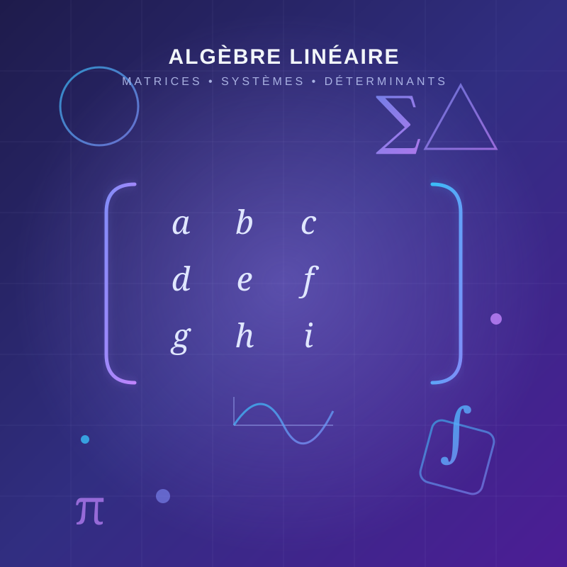

Ce projet consiste à résoudre plusieurs problèmes d'algèbre linéaire et d'analyse mathématique à l'aide de méthodes rigoureuses.
Retour aux projets
Détails du projet
Étudier les matrices, déterminants, applications linéaires et systèmes d'équations.
Résolution de nombreux exercices, interprétation graphique et démonstrations.
Algèbre, raisonnement logique, analyse mathématique et résolution de problèmes.
Outils utilisés
✔ Algèbre linéaire
✔ Matrices
✔ Déterminants
✔ Systèmes linéaires
✔ Applications linéaires
✔ GeoGebra
✔ Microsoft Word
✔ PowerPoint
✔ Calculatrice scientifique
Bilan du projet
Ce travail m'a permis de renforcer mes connaissances en mathématiques et d'améliorer mes capacités d'analyse, de démonstration et de résolution de problèmes.